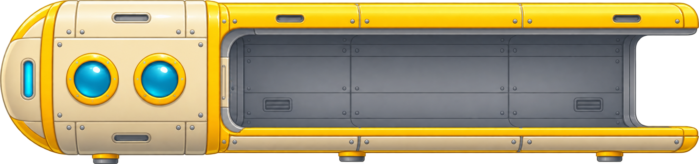
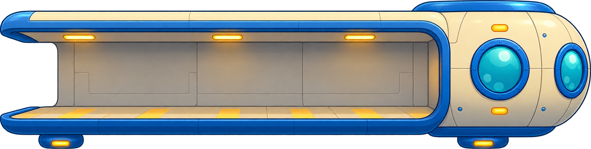
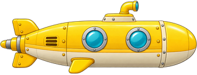
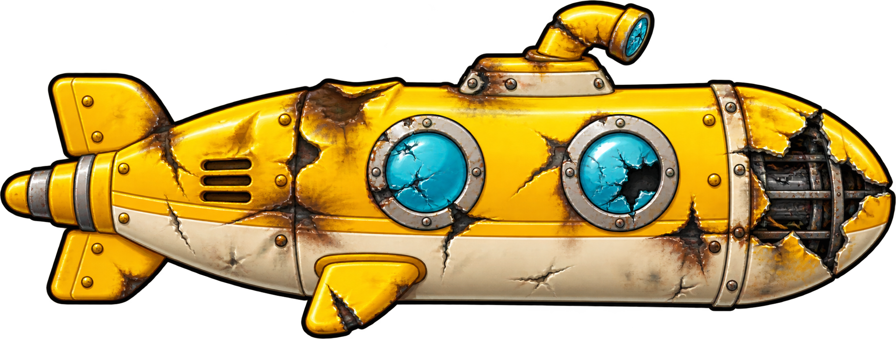

G₁ · A₁ · H₁ · C₂
Neljä syvyyttä: G₁ alimpana ja C₂ lähimpänä pintaa. Ohjaa näppäimillä Q W E R tai ruudun painikkeilla. Pidä painiketta pohjassa, niin siirtyminen nopeutuu.
Matka on kaksi kertaa pidempi. Kerää 12 helmeä ja tankkaa 8 tynnyristä. Helmien pisteet pinnalta pohjalle: 1, 2, 3 ja mustasta helmestä 4.
Väistä 8 miinaa! Ensimmäinen osuma vaurioittaa alusta, toinen pahentaa vaurioita. Kolmas osuma upottaa aluksen ja päättää pelin.
Q = G₁ (alin), W = A₁, E = H₁ ja R = C₂ (ylin). Vauhti alkaa liukusäätimen maksimista (150).
Lyhyt painallus liikuttaa rauhallisesti. Pidä näppäintä tai painiketta pohjassa, niin siirtyminen nopeutuu. Matkalla vene pysyy vaakasuunnassa paikallaan. Lopussa se ajaa automaattisesti aseman sisälle.